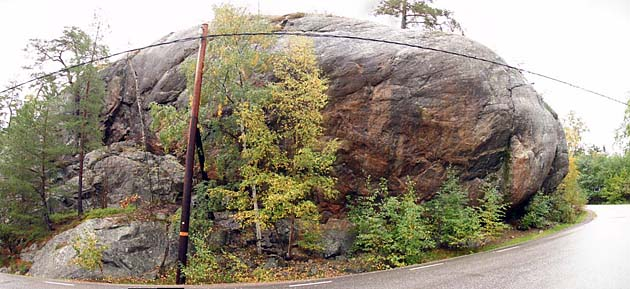
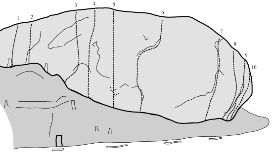
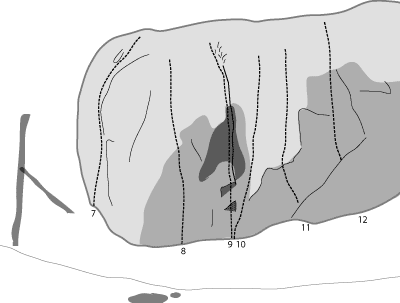
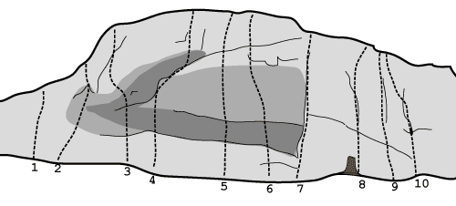

Anneberg
Lat: 59.33121
Long: 18.20703

Allmänt
Svagt överhängande klättring på små grepp. Klippan är inte så hög men har många fina leder, särskilt i de övre graderna. Öppet läge och nära till bad.
Vägbeskrivning
<div style="width: 355; float: right; margin-left: 10px; padding: 3px; border: solid 1px #cccccc;">
<googlemap width=350 height=300 lat="59.33121" lon="18.20703" zoom="14" type="map" controls="small">
59.33121,18.20703,
Anneberg
</googlemap>
</div>
<div style="float: right; margin-left: 10px;">
<slresa>
titel=Anneberg
lat=18207030
long=59331210
</slresa>
</div>
Från Stockholm: kör Värmdöleden 222, sväng av mot "Skuru/Ektorp/Sjukhus" (innan Skurubron), kör vänster och under motorvägen. Följ Skurusundsvägen rakt fram och efter en stund har du klippan på höger sida precis vid vägkanten. Ställ bilen på parkeringen precis vid klippan.
Leder

Vänstra väggen
- 1
- Köp och...
- 7a
- Svårgraderad boulderled vid tallen.
- 2
- Sälj
- 6a+
- Kort och lite krånglig.
- 3
- Knutby
- 7c
- Går numera rakt upp till ett eget ankare.
- 4
- Pilgrim
- 8a
- Förlängdes något 2013 och går upp till samma ankare som Knutby.
- 5
- No fuel for the pilgrims
- 8a+
- Långa moves mellan dåliga grepp. Ankare.
- 6
- Ge kärleken en chans
- 7c+
- Insteg vid flaket. Rakt upp sedan höger och upp på svaet. Ankare.
- 7b
- Jag vill ha ett moln
- 7b
- Start i Frontpage sedan bultad linje till höger.

- 8
- Klart ball
- 7b+
- Intensiv klättring. Klart finare än vad den ser ut.
- 10
- Ve och fasa
- 6c+
- Precis till höger om diedret
- 11
- Bussen i nyllet
- 7b
- Överhänget på spetsen, ofta förväxlad med leden ovan.

Högra väggen
- 1
- Soldans
- 6c+
- Fin led på annorlunda grepp. Tidigare mixled, nu helbultad.
- 3
- Onda ögat
- 8a
- Rejält överhängande insteg.
- 4
- Benny Måne
- 7c
- Kroppstung. Förlängdes 2013 med ett par meter och försågs med ett ordentligt ankare.
- 5
- Crimp it
- 7c
- Beskrivande namn - den tydliga krimpen.
- 6
- Drive in
- 6a+
- Svårsäkrad.
- 8
- 1:an
- 6a
- Börjar precis t h om trädet. Bultades om och förlängdes 2013, går numera hela vägen till toppen.
- 9
- 2:an
- 6b+
- Bultades om 2013 och förlängdes med ett par meter.
- 10
- 3:an
- 6a+
- Den högra sprickan. Delar numera ankare med 2:an.
Jonas Ahlman
]]
Kategori:Nacka-Värmdö
Kategori:Stockholm
Category:Trad
Category:Sport
Category:Vertikalt
Copyright (C) Permission is granted to copy, distribute and/or modify this document under the terms of the GNU Free Documentation License, Version 1.3